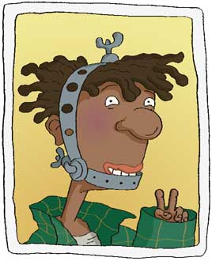

|
 |
Darren is "almost cool" by family association.
His older brother Will is a popular High School student.
But Darren's shot at stardom has been temporarily sabotaged by the incredible orthodontia obscuring his face.
His entire head is encased in scrap metal -- anchors, straps, rubber bands, the works. But a tell-tale mop of truly cool hair promises greatness.
Agreeable, easy-going and charismatic, Dodie predicts that Darren is destined for total and extreme popularity when his headgear comes off.
Because Darren is kin to cool, he is constantly forced to solicit information from his brother. But his opinion counts too.
When the girls need a male opinion on anything, they call for a "Darrenalysis".
|